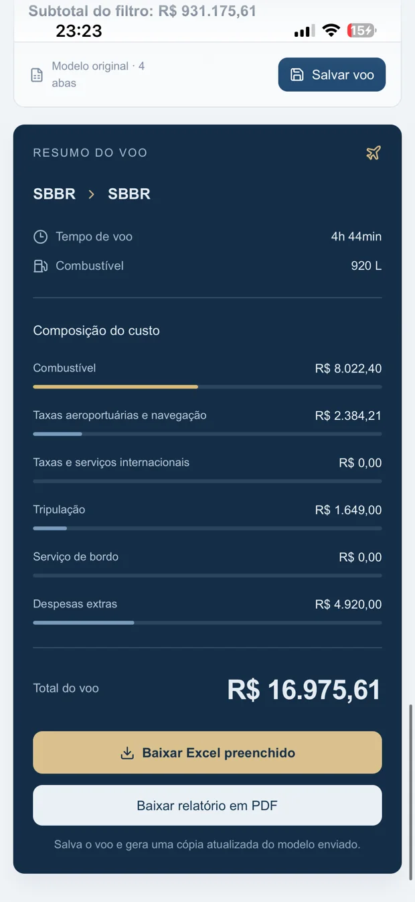
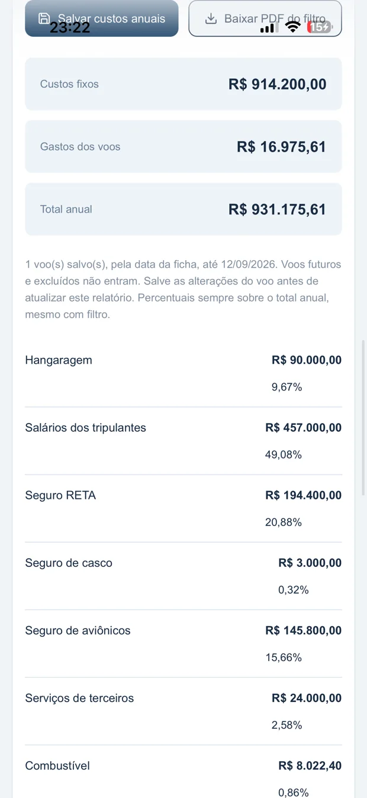

Financeiro operacional
Seu voo, em números.
Custos por voo, despesas operacionais, tripulação e consolidação anual em uma leitura direta.

Custo do voo
Entenda a composição antes de olhar apenas o total.
✓Custo total do voo.
✓Custo por hora, por passageiro e por distância.
✓Combustível, taxas, tripulação, serviço de bordo e despesas extras.
✓PDF operacional e Excel preenchido.
Relatório anual
Custos fixos + gastos dos voos.
O relatório anual reúne valores fixos informados e os gastos dos voos salvos, com filtros e percentuais por categoria.
Custos fixos
Hangaragem, salários e seguros
Valores anuais centralizados no mesmo relatório.
Gastos de voo
Consolidação da operação
Custos dos voos realizados entram na composição do período.

Indicadores
Leitura rápida para gestão.
R$Custo total do voo
hCusto por hora e tempo efetivo
%Participação por categoria no total anual